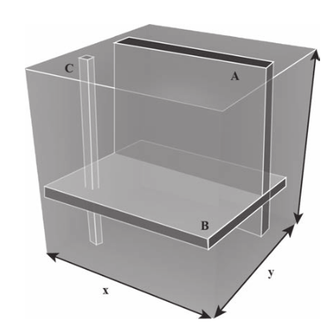
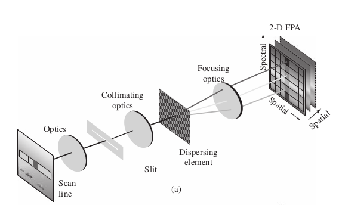
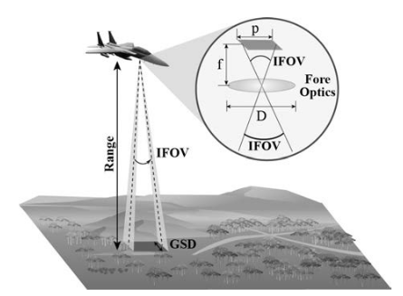

2 Physical Context
Update required!
test text
more test text….
2.1 Pollution and Particulate Matter
2.2 Optical Properties of Aqueous Solutions
2.3 Chemical Reaction Kinetics
2.4 Photolysis
2.5 Indoor Air Quality
2.6 Hyperspectral Imaging
The following are notes from the Manolakis textbook that I originally kept here. NOTE: we will need to either make new figures or correctly cite these for attribution.
2.6.1 Hyperspectal Imaging Sensors
- Hyperspectral Sensors aka imaging spectrometers
- scanning mechanism
- imaging system
- spectrometer
- 3 types of resolution
- spatial
- spectral
- radiant
- (temporal?)
2.6.1.1 Spectral-Spatial Data Collection and Organization
- Data collected into Data Cube
- 2 spatial dimensions, 1 spectral dimension
 
- Different types of rigs:
- Pushbroom scanner (ours)
- Staring System
- Fourier Transform Imaging Spectrometer (FTIS)
2.6.1.2 Spatial Sampling
- ground resolution elements are mapped to picture elements (pixels)
- IFOV: Instantaneous Field of View
- Cross track dimension the projection of the long axis of the slit (i.e. the axis of the pushbroom sensors)
- Along track dimension the direction accumulated by traveling
- Ground Sample Distance physical size of projected pixel element

2.6.1.3 Spectral Sampling
- Recovery of spectral info is imperfect due to finite sampling
- Spectral Response Function is the weighing function that describes the wavelengths that are transmitted to a particular spectral sample
2.6.1.4 Radiometric Sampling
- detector transforms radiant power to electrical signal
- electrical signal converted to numbe via analog-to-digital converter
- photon detectors
2.6.1.5 Signal Consideratiosn
Strength of signal is determined by: - Terrain composition \(\to\) affects amount of radiant energy reflected/emitted from ground resolution element - Range Intensity drops off by inverse square law. Further you are away, the worse the signal - Spectral Bandwidth output signal of detector element is proportional to spectral bandwidth of the detector - Instantaneous Field of View Decreasing IFOV increases spatial resolution but weakens the signal - Dwell Time the time required to sweep the IFOV across the ground resolution element, i.e. the time-on-pixel. Longer dwell time \(\to\) more accumulated photons \(\to\) more signal.
2.7 Remote Sensing
mention different types of satellite data platforms (mostly optical), differences in orbits, coverage, etc… Also good to discuss the increasing use of drones for a variety of applications including intelligent agriculture, geophysics, mapping, etc…
- Remote Sensing: data acquisition, processing, and interpretation of images, and related data, obtained from aircraft and satellites that record the interaction between matter and electromagnetic radiation
- Source: the source of electromagnetic radiation, e.g. the sun, black-body radiation, microwave radar, etc…
- Atmospheric Radiation: The EM radiation propagating through the atmosphere. Moderated by various processes including absorption and scattering
- Earth’s Surface Interation: Amount and spectral distribution of radiation emitted/reflected by the earth’s surface. This depends on
- physical properties of the matter
- wavelength of EM radiation that is sensed
2.7.1 Infrared Sensing Phenomenology
- Main passive sources of EM radiation for remote sensing are light emitted by the sun and the self-emission via black-body radiation of objects due to their temperature.
2.7.1.1 Sources of Infrared Radiation
- spectral radiant exitance power per unit area emitted by the sun. We can treat this as a black body with temperature \(5800 K\), maximum emittance at \(\lambda = 0.50\) \(\mu m\).
- The Earth is ~\(300 K\) with maximum spectral radiant emittance at \(\lambda = 9.7\) \(\mu m\). This is known as the thermal infrared
2.7.1.2 Atmospheric Propagation
- Key parameter is the path length of atmosphered traveled through before it arrives at the remote sensing system. Main effects are:
- Atmospheric Scattering: diffusion of radiation by particles in the atmosphere
- Absorption
- Useful remote sensing spectral regions are obtained via the Transmission Spectrum.
- Reflective Range: \(0.35-2.5\) \(\mu m\). Dominated by solar illumination
- Water Absorption: \(0.2-2.5\) \(\mu m\).
- Atmospheric Windows: Regions of low atmospheric absorption
2.7.1.3 Reflectance and Emissivity Spectra
There are three processes that occur when EM radiation meets and interface:
- Reflection: Solar illumination dominates here. Consequently, this part of the spectrum is used to characterize the surface
- Specular Reflectors: Flat surfaces that act like mirrors, i.e. \(\theta_i = \theta_r\).
- Diffuse (Lambertian) Reflectors: Rough surfaces that reflect uniformly in all directions.
- Real Reflectors: Somewhere between the specular and diffuse.
- Absorption
- Transmission
- Fractions vary as a function of \(\lambda\)
- Remote sensing usually cares about diffuse reflectors because this is the dominant type of most materials (water being an exception).
- Reflectance of a material is characterized by its Reflectance Spectrum, that is, the percent of incident light reflected as a function of wavelength.
- Dips in reflectance spectrum are called absorption features
- Peaks are called Reflectance Peaks
- Emissivity Spectrum: The ratio of radiant emittance at a given temperature to the radiant emittance of a black body at the same temperature.
2.8 Solar Geometry
An explanation of relevant solar angles as well as their determination (i.e. the code I ported to Julia from Matlab script Dr. Lary supplied). We should also comment on the importance of